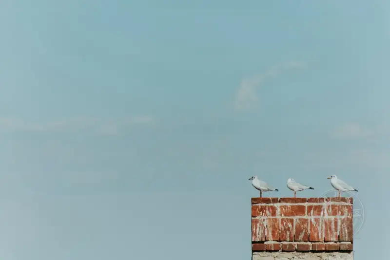
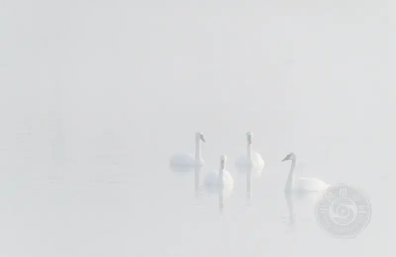
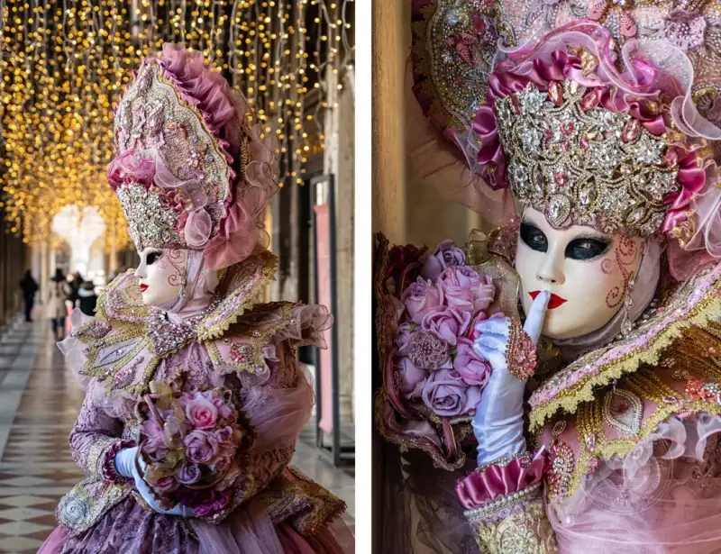
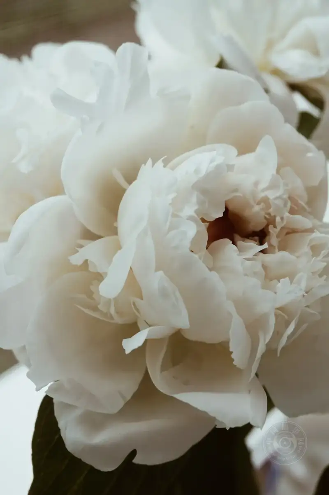
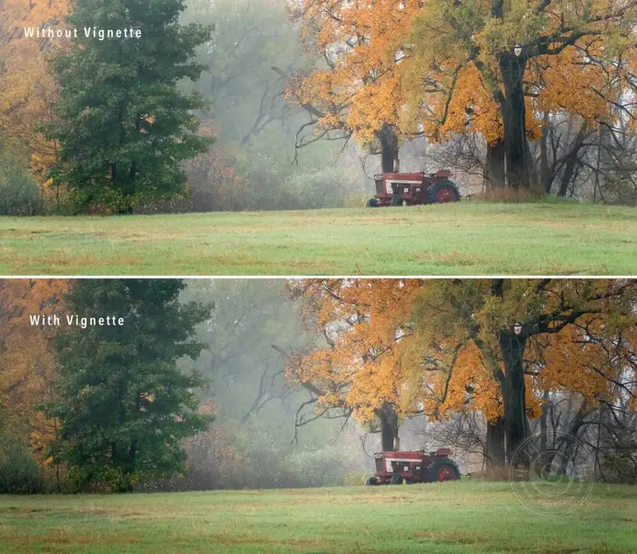
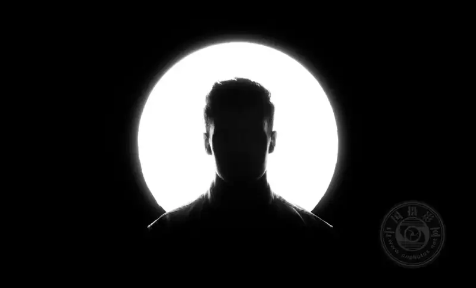
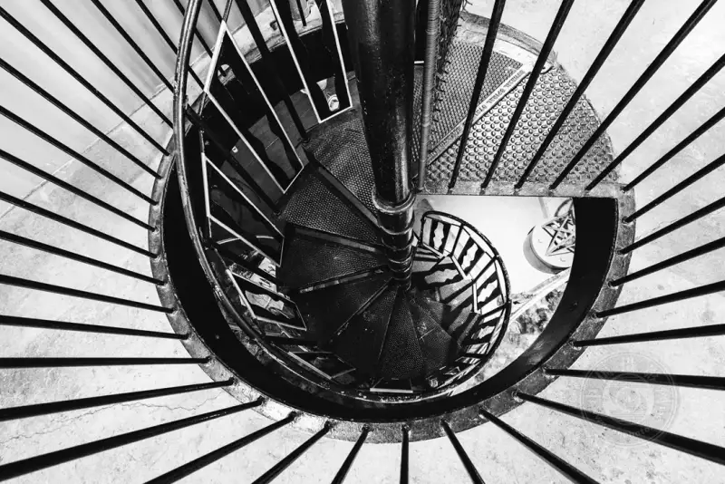

Published: 2023-07-27
Source link: https://www.cnphotos.net/academy/show-148.html
▲© Jenn Mishra
Isolating the subject is an important compositional technique in photography. It simplifies the image, strengthens its impact, and makes the subject of the photo clear to the viewer.
Isolating the subject seems easy. You look at something, press the shutter, and what is hard about that? But many beginners produce images with no clear point of interest. There are a few reasons for this:
1. You do not know the subject
To separate a subject, you must know in your mind what the subject is. Beginners often struggle with this.
▲©Jenn Mishra
The world can be a busy place. It is not easy to pull a subject out of a busy background.
Some people do not want to focus on one subject. Others rely on quantity. They shoot many images and hope one is good. Sometimes the subject is recognizable, but it does not stand out. It blends into the background, or distracting elements get in the way.
2. You see the world with your brain
What we see as photographers is not what the camera sees. Our brain fills in the gaps and assembles the scene. The scene we see may feel closer than it is in the photo. For example, mountains in a landscape may look closer in real life than they do in the picture.
▲©Pedro Lastra
When we see something interesting, the brain filters out everything else. When you look at the photos at home, you notice power lines, annoying road signs, or trash you did not see when you shot. This happens easily and without thought. Sometimes we do not even realize that our brain is adjusting what we see.
Good photographers know the gap between perception and reality. They use compositional techniques to close it. Isolating the subject takes both skill and deliberate composition.

▲©Z S
One main way to isolate a subject is to remove distractions. Photographers do this both when they compose and in post-processing.
Minimalist photographers keep this idea in mind. They use only a few elements when they compose. Their subject stands alone, because nothing else appears in the photo. The subject takes the center.
Minimalism is an art style that uses very few compositional elements. One technique that minimalist photographers use is negative space. With negative space, the area around the subject becomes an important part of the frame. To make a minimalist photo, you place the subject, or part of it, in the frame. The composition of a minimalist photo is simple, but its meaning is not always simple.

▲©Jenn Mishra
This image of a swan in fog uses negative space to isolate the subject.
Isolating the subject does not always mean a simple image. But it does mean you remove the elements that pull attention away from the subject.
Now let us look at some techniques that help you isolate your subject.
- Simplify the background
A clean background makes the subject stand out more than a busy one. If you can, move the subject away from a busy background.
Sometimes changing the viewpoint or angle of the subject helps. Move left or right, up or down. A change of position can move the subject into a cleaner space. If the background is too busy, try a low angle and use the sky as the background. This simplifies the composition.
▲©Jenn Mishra
I used a low viewpoint to separate a few sunflowers from the sky. If I shot at eye level or higher, the sunflower field would become the background. That is not bad, but I wanted to use a technique to make the background cleaner and make these sunflowers stand out.
One more important point. Try to keep any background element from crossing the subject. Remember that you see a 3D scene, but the camera records a 2D image. Your eyes sense the depth between the background and the subject and separate them. The camera does not. A common compositional mistake is when a pole or stick seems to grow out of a person's head.
▲©Jenn Mishra
A before-and-after comparison. The rope behind this Cuban boxer pulls attention away from him. I could remove it in post-processing, but it is better to move the boxer to a cleaner background before you shoot.
- Use shallow depth of field
When you do not have a clean background, you can use your camera's selective focus. You get shallow depth of field by choosing the aperture.
▲©the blowup
Shallow depth of field is a specific photographic technique. It blurs the background, removes distractions, and creates a separation between the focused subject and the out-of-focus background. If you have not used it before, it may feel a little complex. In short, you open the aperture wide, and choose a low f-stop value such as f/2.8. At a wide aperture, focus narrows on the main subject and the background blurs. For example, focus on a person's nose may leave their ears out of focus.
Shallow depth of field also depends a lot on your distance to the subject and on the subject's distance from the background. If you cannot get shallow depth of field at a wide aperture, move closer to the subject. Then try to separate the subject from the background. You can also control how blurred the background is. Taken to the extreme, all background elements turn smooth, and only color and blur remain.
▲©Jenn Mishra
In the image above, shallow depth of field let me separate fallen flowers from a busy courtyard background. Some hints of color remain in the background. They are interesting, but they do not pull my attention away.
- Crop
The key to isolating the subject is how you frame the shot. You can include a lot of background, or you can zoom in on the subject. A good crop makes the frame all about the subject and removes other distractions.
Cropping is a step you take both when you shoot and in post-processing. When you shoot, cropping means choosing the right focal length on a zoom lens. It is good practice to frame as much as you can in the lens. But in post-processing, you make one more crop to choose what stays and what goes.

▲©Jenn Mishra
When I shot this model, I tried many focal lengths. A close-up removes the crowded streets of the Venice Carnival, on the right.
When you crop, decide what must appear in the frame and what is not needed. Beginners often leave too much space around the subject. They are shy about moving closer, or unsure how far they may crop. There are no hard rules on how to crop an image. Take time to try different crops. A good crop can make your photo stand out.
When you decide how to crop, first find the point of interest in the image. Identify the key elements that must stay, and then decide whether to add anything else. You may be surprised how often the other elements are not needed.
Filling the frame with the subject is another way to isolate it. Do not be afraid to cut off part of a head or half a flower. As long as nothing else enters the frame, you have isolated the subject.

▲©Taisiia Shestopal
Until you try it, you may not imagine how a crop changes an image. Here is an exercise that changes the way you look at photos:
• Choose an image and open it in a post-processing program.
• Crop the image at random, or draw a rectangle on it. You can even close your eyes while you draw the rectangle.
• Look at this new crop. Do you still need the part you cropped away? Do you miss what you cut off?
• If you cropped away too much, widen the rectangle a little.
• Try cropping a little off the top and bottom of the frame.
• Try cropping a little off the left and right sides.
• Keep adjusting until you are happy with the result.
▲©Jenn Mishra
A crop comparison. To see different crops of the original image on the left, I pressed the "X" key twice in Lightroom, giving the two middle images. The last crop was the one on the far right. I widened the crop box a little and moved it to the far left of the frame.
This exercise is not about the first random crop. It is about the decisions you make after that. If you end up choosing the first position, then your image did not need another crop. As you decide what you like and dislike, you make key decisions about the content of the final image.
- Remove or soften distractions
Isolating the subject means removing or softening any distracting element.
A distraction is anything that can pull the viewer's eye away from the subject. Photographers usually clean up an image in post-processing by removing distracting elements. This includes removing or darkening bright spots in the background.
▲©Cris Constantin
For example, many photographers add a slight vignette to an image to darken the edges. This draws the eye to the center of the frame.
Brightness draws the eye, and so do color and sharpness. If you cannot remove a distracting element, try darkening it. You can also desaturate it, or lower its sharpness and contrast. In this way the distraction stays in the frame, but it does not pull the eye away from the subject.
Distractions may look small, but they add up. By removing them, you let the viewer notice only your subject.

▲©Jenn Mishra
A sharp-and-soft comparison. Adding a slight blur draws the eye to the subject. Unless you look at the two side by side, you may not notice the difference.
- Use contrasting elements
Another way to isolate a subject is to look for strong contrast. The difference between the subject and the background helps the subject stand out.
A silhouette is a good example. A silhouette separates a dark subject from a light background, or a light subject from a dark background.

▲©Joe Shields
This is the idea behind many studio shots. Studio lighting highlights a product or model and separates the subject from the background.
Contrast between light and dark is another method. Other contrasting elements also help isolate the subject. For example, shoot a colorful subject against an unsaturated background.
Selective color means one color appears in a black-and-white image. It is a way to isolate one subject among many, as in the first image of this article.
When you compose, also watch for differences in color and shape. Bold patterns, or lines that flow in opposite directions, also help isolate the subject.

▲©Jenn Mishra
In the image above, the lines lead your eye to the subject: a circular spiral staircase. The difference in shape and the direction of the lines emphasize the subject. The black-and-white photo removes color distraction.
To summarize:Isolating the subject is one of the most important compositional tools. If you want more impact in your images, separate the subject.
When you shoot, identify the subject clearly. When you compose, emphasize the subject and soften everything else. Look for a simple background and use negative space to set off the subject. If the background is busy, change the angle or use shallow depth of field. Keep isolating the subject in post-processing. When needed, crop or remove distracting elements.